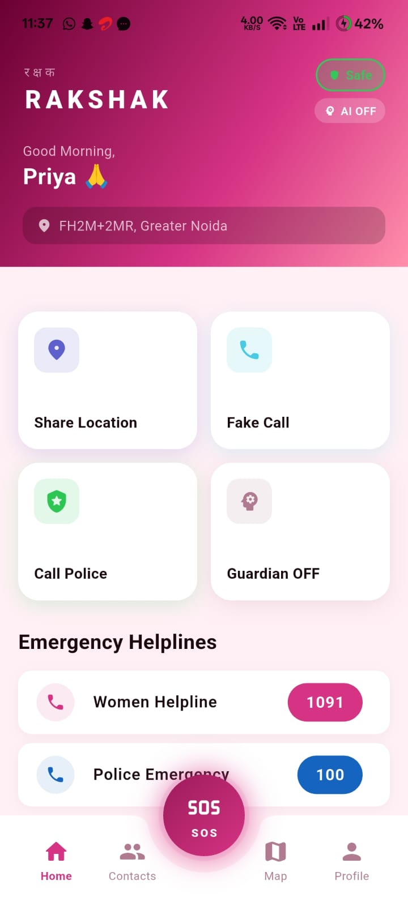

Version 1 — Basic Safety Grid
The first concept was a simple grid of safety actions: Share Location, Fake Call, Call Police, and Guardian toggle. Clean and fast to reach — but fundamentally missing intelligence and context. It was reactive, not proactive.
The First Draft
Version 1 presented four primary action tiles on the home screen with a search bar and basic navigation. An SOS button floated at the bottom. Emergency helplines were listed below the grid.
Usability tests revealed the design had serious gaps when stress-tested against real-use scenarios.
- 1No Safety Status: Users had no way to communicate their current state. No "I'm safe" signal meant contacts had no baseline to measure against.
- 2Guardian Toggle was Confusing: The Guardian feature appeared as an on/off card with no explanation — users didn't understand what it activated or why it mattered.
- 3No AI Integration: The app was purely manual. There was no voice monitoring, no automatic threat detection, no late-night risk flagging.

Version 2 — AI-Powered Guardian
Version 2 introduced live status indicators, AI Guardian settings with granular controls, a trusted contacts system with real contact management, and safety tips embedded contextually. The app evolved from a reactive tool to a proactive safety companion.


Three Screens, One Coherent Safety System
The redesign introduced live status badges, AI Guardian toggles with clear labels, a full contacts management flow, and granular control over safety features like Voice Monitoring and Shake-to-SOS.
Each screen reinforces the same visual language — deep magenta gradient, rounded cards, clear toggles — so the app feels instantly familiar regardless of which screen a user is on under stress.